Teacher : Children, are you still sitting in the same place
where you were when the class started?
Student : Teacher, we haven't moved from our place.
Teacher : No, your position has been changed
Why does the teacher say that the children’s position has been
changed?
In our daily life we always engage in some activities. We
move in various situations like running, playing and walking. A bird flying, a car running, leaves swaying in the
wind - all these are different forms of motion.
Fig. 2.2
How can we understand whether an object is moving? Let's
analyze the picture given above. What are the situations
shown in the figure 2.2?
y Child sitting on a moving giant wheel •
y
•
y
•
Tabulate the situations that the objects change their position relative to the surroundings and those do not.
Objects not changing
position relative to
surroundings
Objects changing position
relative to surroundings
•
•
•
•
Table 2.1
Objects that change the position with respect to their
surroundings are considered to be in motion, while those
that do not change position are considered to be stationary.
24
Page 25
BASIC SCIENCE - VIII
Is a child sitting on a moving giant wheel in motion relative
to the child sitting near by? What does a person standing
on ground see?
The above situations are given in the table below. Complete
the table suitably by putting marks.
Context
The reference object
Child on a
moving giant
wheel
child sitting near by
Person riding a
horse
The Horse
State of
motion
State of rest
A Person standing on the
ground
The Ground
The Bird
Twig in the beak
A Person standing on the
of a flying bird
ground
Earth in the
solar system
The Sun
Log of wood in a
moving lorry
The Lorry
A book on a table
The Moon
The trees on either side
The Table
The Sun
Table 2.2
What can we infer from the table? To determine whether
an object is moving, we need to refer to another object. The
object that is used as a reference is called the reference
object.
The object taken to determine the state of motion or the
state of rest of a body is called the reference object.
If an object changes its position relative to the reference
object, it is said to be in motion, and if it does not change
position, it is said to be stationary. Moving objects undergo
25
a change in position. Let's try measuring the change in
position.
Distance
The picture of a 400 m track is given below.
Table 2.3
What will be the length of the path travelled by an athlete
completing two rounds on this track?
Odometre
Distance is the length of path travelled by an object.
The SI unit of distance is metre.
Have you ever seen the device that shows the distance
travelled by vehicles? It is called an odometre. An odometre
records distance in kilometre.
Fig. 2.4
Since 1 km = 1000 m, calculate how far a vehicle has
travelled so far, according to its odometre.
Fiigure 2.5 shows a railway track from A to F. Note down
the distance traveled by the train upon reaching each
place.
Place
Distance traveled
At A
While reaching B
While reaching C
While reaching D
While reaching E
Fig. 2.5
26
While reaching F
Table 2.3
Page 27
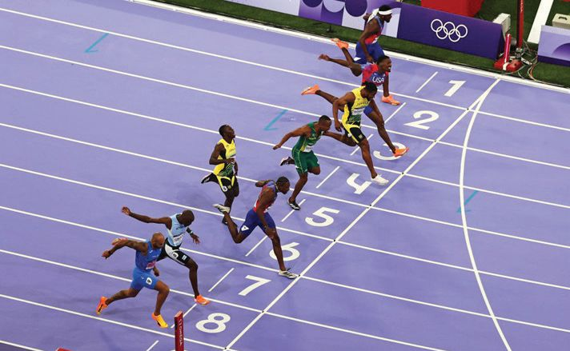
Figure fig_ch01_p027_01 (Page 27)
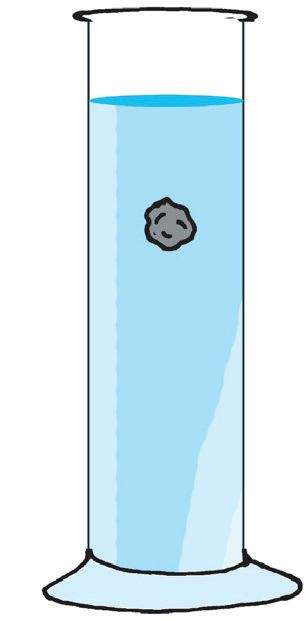
Figure fig_ch01_p027_02 (Page 27)
BASIC SCIENCE - VIII
Speed
Fig. 2.6
A photo finish picture of the 100 m race in the Olympics is
given above. How would the winner be decided? The athlete
who completed 100 m in the least time would be the winner.
Let's do an experiment.
Take a tall glass jar. Mark the top and bottom as A and B,
respectively. Fill the glass jar with glycerin and drop a stone
from the top. Start the stopwatch when the stone reaches A.
Stop the watch when the stone reaches B.
y Time taken for the stone to reach B
= ..............
y Distance travelled
= ..............
A
y Distance travelled by the stone in one second =.............
The unit of speed is m/s.
Speed is the distance travelled by an object in unit
time. The SI unit of speed is m/s.
Although the SI unit of speed is m/s, the speed of vehicles
is usually expressed in km/h.
B
Fig. 2.7
Observe the relation between km/h and m/s.
5
1 km/h = 18 m/s
Can you explain how this was calculated?
27
Page 28
Figure fig_ch01_p028_01 (Page 28)
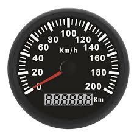
Figure fig_ch01_p028_02 (Page 28)
BASIC SCIENCE - VIII
y Bus A traveled 75 m in 5 seconds. Bus B travelled 112 m
in 7 seconds. Which bus was faster?
Speedometre is the device that shows the speed of a
vehicle (Fig 2.8).
Fig. 2.8
The details of 3 children who participated in a 400 m
running race in school sports meet are given in the table
below. Can we find the fastest athlete among them?
Child
Distance
Time
A
400 m
180 s
B
400 m
120 s
C
400 m
400 s
Speed
Table 2.4
Here, speed is the distance traveled in one second. Will
the distance traveled in one second always be the same?
Let's check.
Uniform Speed, Non-uniform Speed
Look at the clock dial shown. Complete the table based
on the movement of the tip of the second hand (P in the
figure). You can measure the distance between different
points using a thread, right?
Change in position
Fig. 2.9
Distance (cm)
From A to C
10
From C to E
10
From E to G
10
Change in position
Distance (cm)
Time (s)
From A to D
15
From D to G
15
From G to J
15
Table 2.5
28
Time (s)
Page 29
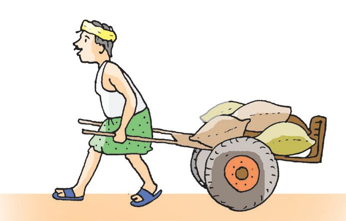
Figure fig_ch01_p029_01 (Page 29)
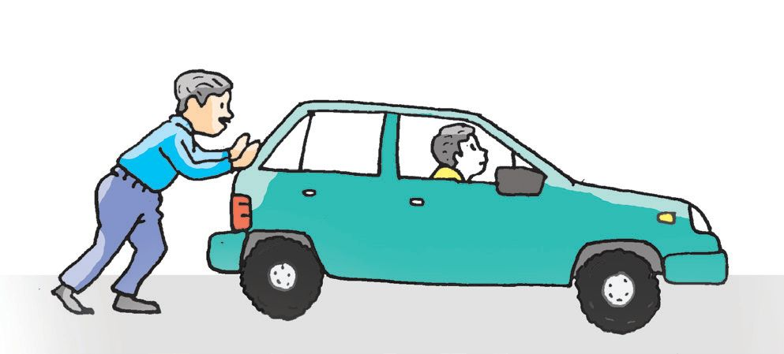
Figure fig_ch01_p029_02 (Page 29)
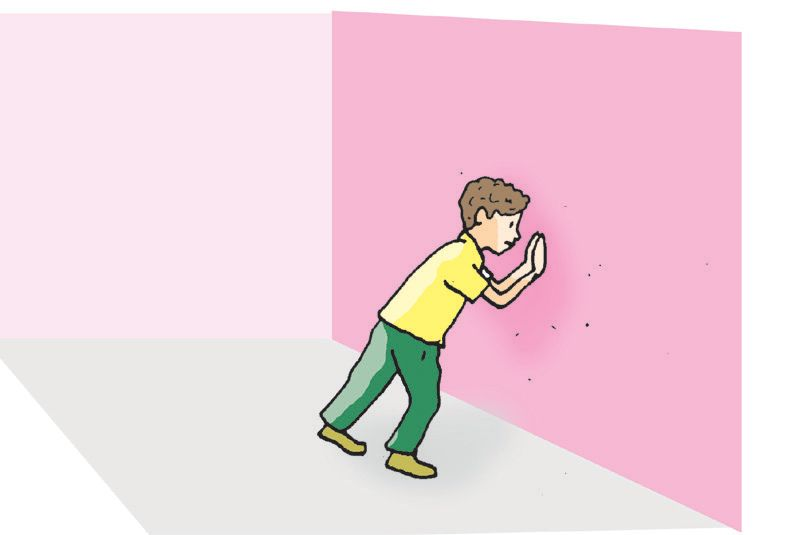
Figure fig_ch01_p029_03 (Page 29)
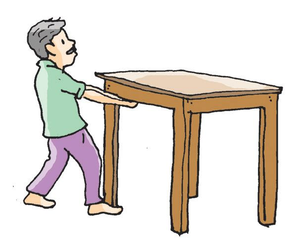
Figure fig_ch01_p029_04 (Page 29)
BASIC SCIENCE - VIII
• What is the distance travelled in every 10 seconds?
• What is the distance travelled in every 15 seconds?
If an object covers equal distances in equal time intervals,
it is said to have uniform speed. Let's write the definition of
uniform speed.
If an object travels equal distance in equal intervals
of time, it is in uniform speed.
In our daily life, are all movements like this?
Birds flying, humans walking, a ball rolling, etc., do not move
with uniform speed. They move with non-uniform speed.
Now, write a definition of non-uniform speed.
We see vehicles ranging from slow-moving bicycles to highspeed cars on the roads. Road accidents due to excessive
speed and carelessness are daily news, aren't they? What
can we do to avoid such road accidents? Discuss.
Now you have learnt about motion. Have you ever thought
about the cause of motion?
Don’t we see a push or pull in all the situations shown
above? This is force. But, is force applied only during
pushing and pulling?
Fig. 2.11
In figure 2.11, we can see that force is applied to change the
shape and direction of the object and to stop a moving object.
Now, write the defention of force.
In all the situations shown above, force is applied through
direct contact with the object. Is it necessary to have a direct
contact in all the cases?
Contact Force, Non-contact Force
Examine the figures.
30
Page 31
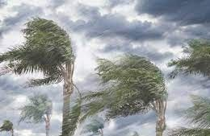
Figure fig_ch01_p031_01 (Page 31)
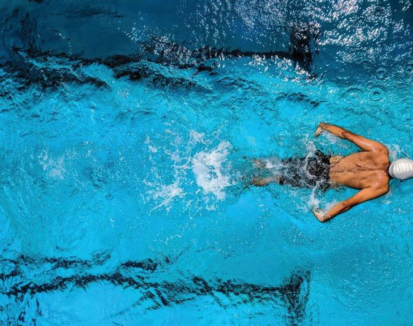
Figure fig_ch01_p031_02 (Page 31)
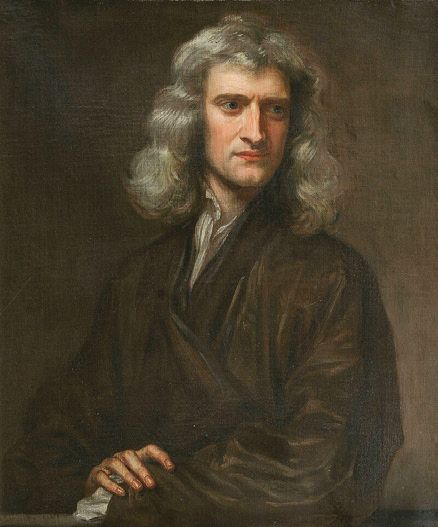
Figure fig_ch01_p031_03 (Page 31)
BASIC SCIENCE - VIII
Fig. 2.12
Identify whether the force applied in each case is a contact or a
non-contact force.
Situation
Mango falling downward
Force
Through Contact /
Non-Contact
Earth's Gravitational Force
Leaves swaying in the wind
Table2.6
The force experienced when objects come into contact with each
other is called contact force. The force effected when there is no
contact with the object is called non-contact force.
The standard unit of force is called the newton. It can
be represented by the letter N. The capital letter is used
because it is the first letter of the scientist's name.
Frictional Force
You must have noticed that a ball rolling freely on the floor
gradually comes to rest. What is the force responsible for
this?
Let's try an activity.
Take a wooden block and make one side smooth leaving
the other rough. Slide its smooth surface down the inclined
plane. Then try to slide its rough side down the inclined
plane.
Sir Isaac Newton
Fig.2.13
31
Page 32
Figure fig_ch01_p032_01 (Page 32)
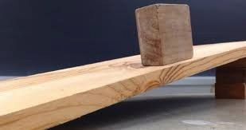
Figure fig_ch01_p032_02 (Page 32)
BASIC SCIENCE - VIII
What difference do you feel?
More force is effected against the movement on
a rough surface. This is frictional force. You can
see that the speed decreases with the increase
in friction.
Fig. 2.14
When a surface moves or tries to move over another
surface, a parallel force is produced between them
against their relative motion. This is frictional force.
Fig 2.15
Observe this activity (Fig 2.15).
Slide a heavy box on a rough surface. Then move the same
box on a trolley with tyres. What difference do you see?
Doesn't the box move faster? In this case, does friction
increase or decrease?
More friction occurs when sliding. This is called sliding
friction. When using a trolley, the tyre rolls. This is rolling
friction. Sliding friction is greater than rolling friction.
Where do we make use of friction in our life?
Friction in Daily Life
Rub your palms together. Do you feel the warmth?
The same thing happens when striking a matchstick and
lighting a lighter.
• Helps to hold objects firmly.
• Helps us in walking.
• Helps vehicles to move without slipping.
•
•
You have understood the benefits of friction.
Fig. 2.16
Is friction always beneficial? Analyze the given situations
below.
Tire wear
Knee wear
Fig.2.17
Does friction have any disadvantages?
• Surfaces in contact wears out.
• Obstructs smooth movement of machine parts.
•
33
Page 34
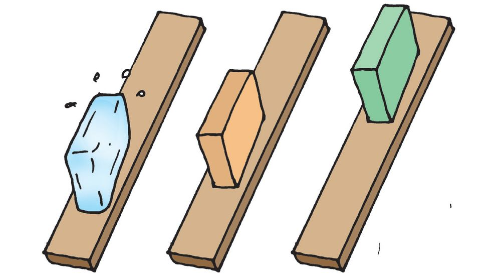
Figure fig_ch01_p034_01 (Page 34)
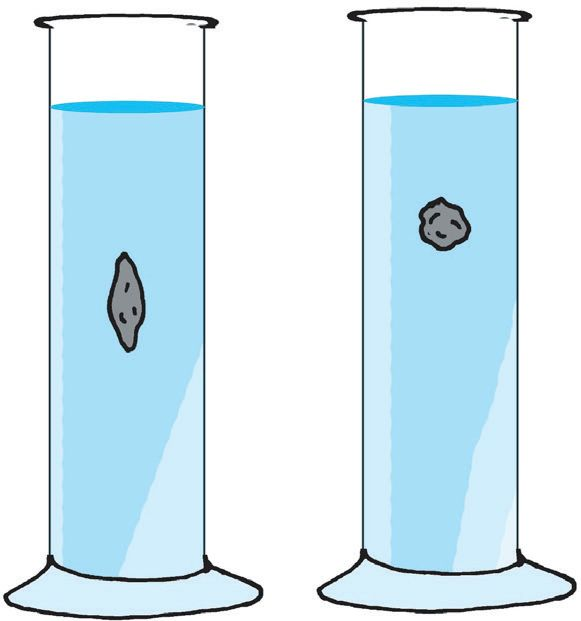
Figure fig_ch01_p034_02 (Page 34)
BASIC SCIENCE - VIII
Ways to reduce friction
To understand the ways to reduce friction, don’t we need
to know the factors that influence it?
Do this activity.
Fig 2.18
Take a wooden block, an ice block, and a rubber piece
of the same mass. Allow them to slide down an inclined
plane. The area in contact with the inclined surface
should be equal in all cases. Record the observations in
the Science Diary.
Doesn't the nature of the surfaces in contact influence
the frictional force?
Let’s try the experiment given below.
Take some water in a glass jar and drop a round stone and
a sharp-edged stone of equal mass into the water.
Which one falls down faster?
From this, we can understand that the shape of the object
affects friction. Write down the factors that affect friction.
We have seen that friction occurs when our palms are
rubbed together. If oil is applied on the hands and rubbed
together, they slip quickly. From this, it can be assumed
that friction is reduced when oil is applied.
Substances that help to reduce friction between
contacting surfaces are lubricants.
List some examples of lubricants.
•
•
Graphite is a solid lubricant. It is commonly used as a lubricant between machine parts at high temperature.
Have you noticed ball bearings like the one shown in the
figure in connection with tyres in vehicles? These are
used to reduce friction with the axle.
Why are airplanes and boats made in a special shape? Can
you explain it based on the experiment shown in Figure
2.19?
Fig. 2.20
Fig. 2.21
This method of reducing friction by changing the shape is
called streamlining.
Let's write let us the various ways to reduce friction.
Let’s assess
1. A car starts from A and reaches B, which is 75 m away.
The uniform speed of the car is 25 m/s. Another car with
a uniform speed of 30 m/s starts from A and reaches B
through C. Which car will reach fthe destination first?
C
70 m
50 m
A
75 m
B
2. A bus starts from C and reaches D in 7 s. If the uniform
speed of the bus is 50 m/s, find the distance from C to D.
3. How long will it take to hear thunder from 12000 m away?
(The speed of sound is 340 m/s).
4. Complete the puzzle given below.
Brings a moving
object to rest..
FORCE
Extended activities
1. Prepare and present a seminar paper on the ways to
reduce road accidents.
2. Prepare a science article on friction in daily life.